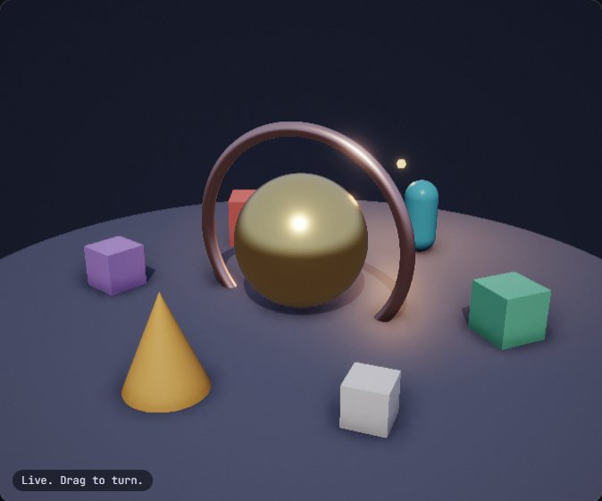
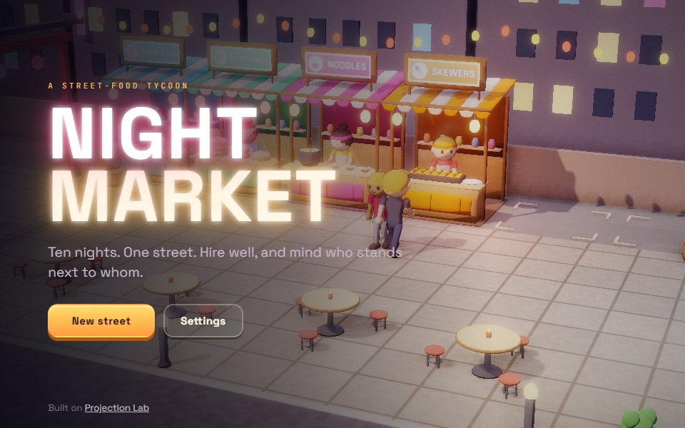
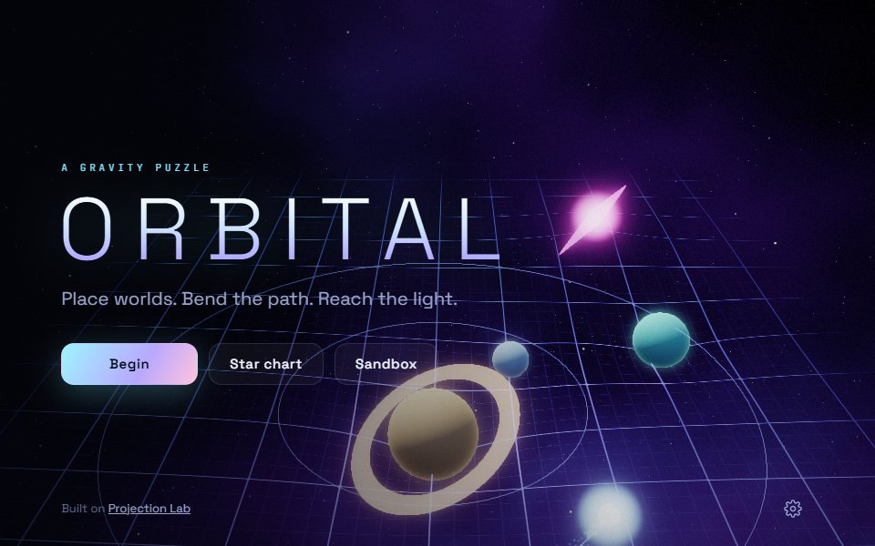
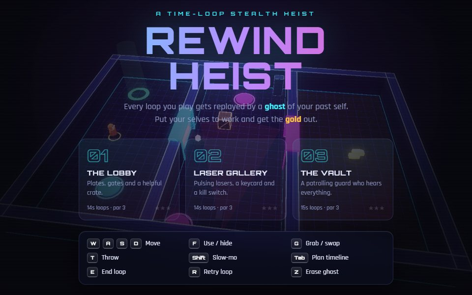
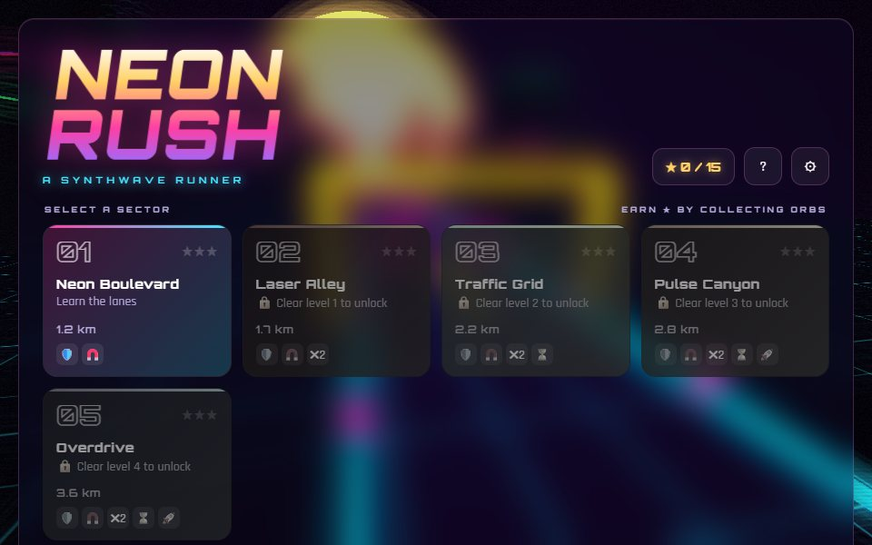

A WebGL engine built from the projection up.
Lights, shadows, PBR materials, skinned characters and 100k-instance scenes in plain ES modules. No three.js, no build step.

What is in it
Everything a small 3D game needs, and you can read all of it.

Light that holds up at scale
Sun shadows in up to three cascades, 16 point lights, ambient occlusion and fog. Meshes outside the view are never drawn, and far ones swap to cheaper models.

Physically based materials
Metallic and roughness, normal maps, emissive maps.

Characters
glTF models, skeletons up to 256 joints, cross-faded clips.

100,000 instances, one draw call
Per-instance matrix and colour, uploaded only where they changed.

Particles and post effects
Pooled sprites, trails, HDR bloom, tone mapping, grading.
The projection is three dot products
No view matrix. The camera's own axes do the work.
A lit, shadowed scene in a dozen lines.
The engine is a folder of ES modules. Copy it next to your page and import what you use.
import { Game, Entity, Mesh, PBRMaterial, StandardMaterial, ShadowMap, primitives } from "./engine/index.js";
const game = new Game({ canvas: document.querySelector("canvas") });
game.scene.shadow = new ShadowMap({ extent: [8, 8] });
const floor = new Mesh(primitives.plane(20, 20), new StandardMaterial({ color: [0.8, 0.8, 0.85] }));
const gold = new Mesh(primitives.sphere(1, 48, 32), new PBRMaterial({ color: [1, 0.77, 0.34], metallic: 1, roughness: 0.25 }));
game.add(new Entity({ mesh: floor }));
const ball = game.add(new Entity({ mesh: gold }));
ball.setPosition(0, 0, 1.5);
game.onUpdate(() => ball.setYaw(game.time)); // fixed 60 Hz steps, drawn at any refresh rate
game.start();Copy three folders
engine/,shaders/andvendor/frompublic/. Or load the single bundled file.Import from one entry point
Every class comes from
engine/index.js. Nothing is global, nothing runs until you call it.Serve it over HTTP
Any static server works. There is nothing to compile, so what you edit is what the browser runs.
Built with it
Four games, each in its own repository.

Night Market
A street-food tycoon where the staff and the regulars are the game.

Orbital
A gravity puzzle. Place worlds, bend the path, reach the light.

Rewind Heist
A time-loop stealth heist. Every loop you play is replayed by a ghost of your past self.

Neon Rush
A synthwave runner with five levels, power-ups and custom shaders.
It started as one idea about cameras.
The camera sits on a sphere around the point it looks at. From that, the engine builds the camera's three axes by hand: forward, up (world-up with its forward part removed) and right. A vertex reaches the screen by measuring itself along each axis.
That camera and projection come from projection_library by Rohit Sawant, and they still run every frame. The renderer, lights, materials, animation and tools grew around them, each written to be read: every file opens with a plain-language account of what it does and why.